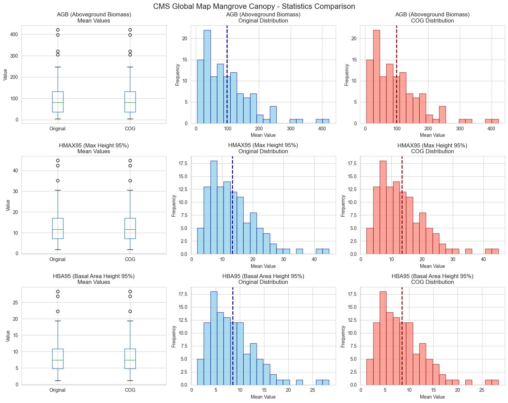

# Setup and Configuration
import os
import json
import boto3
import numpy as np
import pandas as pd
import rasterio
from rasterio.windows import Window
from pathlib import Path
import tempfile
import matplotlib.pyplot as plt
import seaborn as sns
from dotenv import load_dotenv
import gc
from tqdm import tqdm
load_dotenv()
# Configuration
reprocess = True # Set to True to reprocess all files, False to load existing results
BUCKET_NAME = "ghgc-data-store-dev"
ORIGINAL_PREFIX = "coastal-observatory/data"
COG_PREFIX = "transformed_cogs/CMS_Global_Map_Mangrove_Canopy_Biomass"
VALID_DATA_TYPES = ["agb", "hmax95", "hba95"]
NODATA_VALUE = 0
DEFAULT_CHUNK_SIZE = 1024
output_dir = os.path.dirname(os.path.abspath("__file__"))CMS Global Map Mangrove Canopy - Statistics Generation
Compares original GeoTIFF files with transformed COGs using chunked processing for memory efficiency.
Outputs: - detailed_stats.json - Detailed statistics for each file - overall_stats.json - Overall statistics for all 3 variables (agb, hmax95, hba95)
# S3 Helper Functions
def get_s3_client():
return boto3.Session(
aws_access_key_id=os.environ.get("AWS_ACCESS_KEY_ID"),
aws_secret_access_key=os.environ.get("AWS_SECRET_ACCESS_KEY"),
aws_session_token=os.environ.get("AWS_SESSION_TOKEN"),
region_name="us-west-2"
).client("s3")
def list_s3_files(bucket, prefix, extension=".tif"):
s3_client = get_s3_client()
files = []
paginator = s3_client.get_paginator("list_objects_v2")
for page in paginator.paginate(Bucket=bucket, Prefix=prefix):
if "Contents" in page:
files.extend([obj["Key"] for obj in page["Contents"] if obj["Key"].endswith(extension)])
return sorted(files)
def download_s3_file(bucket, key, local_path):
get_s3_client().download_file(bucket, key, local_path)
def extract_metadata_from_filename(filename):
parts = Path(filename).stem.split("_")
return {
"data_type": parts[1] if len(parts) > 1 else "unknown",
"region": "_".join(parts[2:]).replace("_2000year", "") if len(parts) > 2 else "unknown"
}# Chunked Statistics Computation
class IncrementalStats:
def __init__(self):
self.n = 0
self.mean = 0.0
self.M2 = 0.0
self.min_val = float('inf')
self.max_val = float('-inf')
def update(self, values):
if len(values) == 0:
return
self.min_val = min(self.min_val, np.nanmin(values))
self.max_val = max(self.max_val, np.nanmax(values))
for value in values:
self.n += 1
delta = value - self.mean
self.mean += delta / self.n
self.M2 += delta * (value - self.mean)
def get_stats(self):
if self.n == 0:
return {"min": None, "max": None, "mean": None, "std": None, "count": 0}
return {
"min": float(self.min_val),
"max": float(self.max_val),
"mean": float(self.mean),
"std": float(np.sqrt(self.M2 / self.n) if self.n > 1 else 0),
"count": self.n
}
def compute_raster_statistics_chunked(file_path):
try:
with rasterio.open(file_path) as src:
width, height = src.width, src.height
total_pixels = width * height
chunk_size = min(DEFAULT_CHUNK_SIZE, width, height)
stats_calc = IncrementalStats()
valid_pixels = 0
# Process in chunks
for row_off in range(0, height, chunk_size):
for col_off in range(0, width, chunk_size):
window = Window(col_off, row_off,
min(chunk_size, width - col_off),
min(chunk_size, height - row_off))
chunk = src.read(1, window=window)
valid_mask = (chunk != NODATA_VALUE) & np.isfinite(chunk)
valid_data = chunk[valid_mask]
valid_pixels += np.sum(valid_mask)
if len(valid_data) > 0:
stats_calc.update(valid_data)
stats = stats_calc.get_stats()
stats.update({
"valid_pixels": int(valid_pixels),
"total_pixels": int(total_pixels),
"coverage_percent": float(valid_pixels / total_pixels * 100),
"crs": str(src.crs),
"width": width,
"height": height,
"bounds": list(src.bounds)
})
return stats
except Exception as e:
return {"error": str(e)}# File Processing Functions
def process_file_pair(original_key, cog_key, bucket):
result = {
"original_file": original_key,
"cog_file": cog_key,
"metadata": extract_metadata_from_filename(original_key)
}
with tempfile.TemporaryDirectory() as tmpdir:
# Process original file
original_path = os.path.join(tmpdir, "original.tif")
download_s3_file(bucket, original_key, original_path)
result["original_stats"] = compute_raster_statistics_chunked(original_path)
# Process COG file
if cog_key:
cog_path = os.path.join(tmpdir, "cog.tif")
download_s3_file(bucket, cog_key, cog_path)
result["cog_stats"] = compute_raster_statistics_chunked(cog_path)
else:
result["cog_stats"] = None
gc.collect()
return result
def calculate_overall_statistics(results):
overall_stats = {"original": {}, "cog": {}}
for data_type in VALID_DATA_TYPES:
for stat_type in ["original", "cog"]:
values = {"mins": [], "maxs": [], "means": [], "stds": [], "counts": []}
for result in results:
if result["metadata"]["data_type"] == data_type:
stats_key = f"{stat_type}_stats"
if result.get(stats_key) and "mean" in result[stats_key]:
stats = result[stats_key]
values["mins"].append(stats["min"])
values["maxs"].append(stats["max"])
values["means"].append(stats["mean"])
values["stds"].append(stats["std"])
values["counts"].append(stats["count"])
if values["means"]:
total_pixels = sum(values["counts"])
weighted_mean = sum(m * c for m, c in zip(values["means"], values["counts"])) / total_pixels
# Calculate combined std
pooled_var = sum((c-1)*s*s + c*(m-weighted_mean)**2
for m, s, c in zip(values["means"], values["stds"], values["counts"]))
combined_std = np.sqrt(pooled_var / (total_pixels - 1)) if total_pixels > 1 else 0
overall_stats[stat_type][data_type] = {
"min_value": float(np.min(values["mins"])),
"max_value": float(np.max(values["maxs"])),
"mean_value": float(weighted_mean),
"std_value": float(combined_std)
}
return overall_stats# Check for existing results and handle reprocess flag
results_loaded = False
overall_stats_loaded = False
# If reprocess is True, delete existing files and force reprocessing
if reprocess:
print("Reprocess flag is True - deleting existing results...")
for filename in ["detailed_stats.json", "overall_stats.json"]:
filepath = os.path.join(output_dir, filename)
if os.path.exists(filepath):
os.remove(filepath)
print(f"Deleted {filename}")
print("Starting fresh processing...")
else:
# Try to load existing results
if os.path.exists(os.path.join(output_dir, "detailed_stats.json")):
try:
with open(os.path.join(output_dir, "detailed_stats.json"), 'r') as f:
results = json.load(f)
print(f"Loaded {len(results)} existing results")
results_loaded = True
# Load overall stats
if os.path.exists(os.path.join(output_dir, "overall_stats.json")):
with open(os.path.join(output_dir, "overall_stats.json"), 'r') as f:
lines = f.readlines()
if len(lines) >= 4:
raw_stats = json.loads(lines[1].strip())
cog_stats = json.loads(lines[3].strip())
overall_stats = {"original": raw_stats, "cog": cog_stats}
overall_stats_loaded = True
print("Loaded overall statistics")
except Exception as e:
print(f"Error loading existing results: {e}")
print("Proceeding with normal processing...")
results_loaded = False
else:
print("No existing results found - proceeding with processing...")Reprocess flag is True - deleting existing results...
Deleted detailed_stats.json
Deleted overall_stats.json
Starting fresh processing...# Main Processing
if not results_loaded:
# List files
print("Listing files...")
original_files = [f for f in list_s3_files(BUCKET_NAME, ORIGINAL_PREFIX)
if any(dt in f for dt in VALID_DATA_TYPES)]
cog_files = list_s3_files(BUCKET_NAME, COG_PREFIX)
print(f"Found {len(original_files)} original files and {len(cog_files)} COG files")
# Process files
results = []
for idx, orig_file in enumerate(original_files, 1):
print(f"\r[{idx}/{len(original_files)}] Processing {Path(orig_file).name}...", end="")
# Find matching COG
orig_meta = extract_metadata_from_filename(orig_file)
cog_match = None
for cog_file in cog_files:
cog_meta = extract_metadata_from_filename(cog_file)
if (cog_meta["data_type"] == orig_meta["data_type"] and
cog_meta["region"] == orig_meta["region"]):
cog_match = cog_file
break
try:
result = process_file_pair(orig_file, cog_match, BUCKET_NAME)
results.append(result)
except Exception as e:
results.append({
"original_file": orig_file,
"cog_file": cog_match,
"metadata": orig_meta,
"error": str(e)
})
print(f"\nCompleted processing {len(results)} files")
# Save detailed results
with open(os.path.join(output_dir, "detailed_stats.json"), "w") as f:
json.dump(results, f, indent=2)
print("Saved detailed_stats.json")Listing files...
Found 348 original files and 348 COG files
[348/348] Processing Mangrove_hmax95_Yemen.tif...una.tif..........tif...
Completed processing 348 files
Saved detailed_stats.json# Calculate and save overall statistics
if 'overall_stats' not in locals() or not overall_stats_loaded:
overall_stats = calculate_overall_statistics(results)
# Save in special format
with open(os.path.join(output_dir, "overall_stats.json"), "w") as f:
f.write('"Stats for raw tif files."\n')
json.dump(overall_stats["original"], f)
f.write('\n"Stats for transformed COG files."\n')
json.dump(overall_stats["cog"], f)
print("Saved overall_stats.json")
# Display overall statistics
print("\n" + "="*60)
print("OVERALL STATISTICS")
print("="*60)
for stat_type, label in [("original", "Original TIF"), ("cog", "COG")]:
print(f"\n{label} files:")
for var_type in VALID_DATA_TYPES:
if var_type in overall_stats[stat_type]:
stats = overall_stats[stat_type][var_type]
print(f"\n{var_type.upper()}:")
for key, value in stats.items():
print(f" {key}: {value:.6f}")Saved overall_stats.json
============================================================
OVERALL STATISTICS
============================================================
Original TIF files:
AGB:
min_value: 0.284488
max_value: 910.475891
mean_value: 130.237788
std_value: 108.868964
HMAX95:
min_value: 0.848500
max_value: 62.789001
mean_value: 16.388412
std_value: 11.190709
HBA95:
min_value: 0.537700
max_value: 39.789799
mean_value: 10.468337
std_value: 7.126196
COG files:
AGB:
min_value: 0.284488
max_value: 910.475891
mean_value: 130.237788
std_value: 108.868964
HMAX95:
min_value: 0.848500
max_value: 62.789001
mean_value: 16.388412
std_value: 11.190709
HBA95:
min_value: 0.537700
max_value: 39.789799
mean_value: 10.468337
std_value: 7.126196# Generate summary statistics
summary = {
"total_files": len(results),
"by_data_type": {},
"errors": sum(1 for r in results if "error" in r.get("original_stats", {}))
}
for data_type in VALID_DATA_TYPES:
type_results = [r for r in results if r["metadata"]["data_type"] == data_type]
summary["by_data_type"][data_type] = len(type_results)
print("\nSUMMARY:")
print(f"Total files processed: {summary['total_files']}")
print(f"Files with errors: {summary['errors']}")
print("\nBy data type:")
for dt, count in summary["by_data_type"].items():
print(f" {dt}: {count} files")
SUMMARY:
Total files processed: 348
Files with errors: 0
By data type:
agb: 116 files
hmax95: 116 files
hba95: 116 files# Create visualization
viz_data = {dt: {"original": {"means": [], "mins": [], "maxs": []},
"cog": {"means": [], "mins": [], "maxs": []}}
for dt in VALID_DATA_TYPES}
for result in results:
if "error" not in result.get("original_stats", {}):
dt = result["metadata"]["data_type"]
if dt in viz_data and result["original_stats"].get("mean") is not None:
for key in ["mean", "min", "max"]:
viz_data[dt]["original"][f"{key}s"].append(result["original_stats"][key])
if result.get("cog_stats") and result["cog_stats"].get(key) is not None:
viz_data[dt]["cog"][f"{key}s"].append(result["cog_stats"][key])
# Create figure
fig, axes = plt.subplots(3, 3, figsize=(15, 12))
fig.suptitle("CMS Global Map Mangrove Canopy - Statistics Comparison", fontsize=16)
for idx, (var_type, var_label) in enumerate([
("agb", "AGB (Aboveground Biomass)"),
("hmax95", "HMAX95 (Max Height 95%)"),
("hba95", "HBA95 (Basal Area Height 95%)")
]):
# Box plot comparison
ax = axes[idx, 0]
if viz_data[var_type]["original"]["means"] and viz_data[var_type]["cog"]["means"]:
data = pd.DataFrame({
"Original": viz_data[var_type]["original"]["means"],
"COG": viz_data[var_type]["cog"]["means"]
})
data.boxplot(ax=ax)
ax.set_title(f"{var_label}\nMean Values")
ax.set_ylabel("Value")
# Original histogram
ax = axes[idx, 1]
if viz_data[var_type]["original"]["means"]:
ax.hist(viz_data[var_type]["original"]["means"], bins=20,
color='skyblue', edgecolor='darkblue', alpha=0.7)
ax.axvline(np.mean(viz_data[var_type]["original"]["means"]),
color='darkblue', linestyle='--', linewidth=2)
ax.set_title(f"{var_label}\nOriginal Distribution")
ax.set_xlabel("Mean Value")
ax.set_ylabel("Frequency")
# COG histogram
ax = axes[idx, 2]
if viz_data[var_type]["cog"]["means"]:
ax.hist(viz_data[var_type]["cog"]["means"], bins=20,
color='salmon', edgecolor='darkred', alpha=0.7)
ax.axvline(np.mean(viz_data[var_type]["cog"]["means"]),
color='darkred', linestyle='--', linewidth=2)
ax.set_title(f"{var_label}\nCOG Distribution")
ax.set_xlabel("Mean Value")
ax.set_ylabel("Frequency")
plt.tight_layout()
plt.savefig(os.path.join(output_dir, "statistics_comparison.png"), dpi=300, bbox_inches='tight')
plt.show()
print("Saved statistics_comparison.png")
Saved statistics_comparison.png